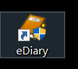

本人第一次写博客，之前都是用自己的日记本。

但是苦于不能时时带着电脑，实在是不方便。。。。所以决定用手机。正好就是朋友也都在用博客，所以，，真香。。。
废话不多说，点到为止。。
冒泡排序
原理：比较两个相邻的元素，将值大的元素交换至右端。
冒泡排序的优点：每进行一趟排序，就会少比较一次，因为每进行一趟排序都会找出一个较大值
思路：依次比较相邻的两个数，将小数放在前面，大数放在后面。
即在第一趟：首先比较第1个和第2个数，将小数放前，大数放后。
然后比较第2个数和第3个数，将小数放前，大数放后，如此继续，
直至比较最后两个数，将小数放前，大数放后。重复第一趟步骤，直至全部排序完成。
冒泡排序冒泡排序，最基本代码。（无优化）
package sdx;
import java.util.Arrays;
public class ceshi {
public static void main(String[] args) {
int s[]={1,3,23,34,6,467,546,7,56,7,48};
System.out.println("排序前："+Arrays.toString(s));
for(int i=0;i<s.length-1;i++){
for(int j=0;j<s.length-1;j++){
if(s[j]>s[j+1]){
int t;
t=s[j];
s[j]=s[j+1];
s[j+1]=t;
}
}
}
System.out.println("排序后："+Arrays.toString(s)); <--直接调方法输出
输出for(int num:s){
System.out.print(num+" "); <--用foreach输出
}
}
}
冒泡排序的原理代码：（二次优化）
package sdx;
public class Main5 {
public static void main(String[] args){
int arr[]={2,5,6,7,8,9,0};
System.out.println("数组排序前");
//这种有冒号的for循环叫做foreach循环，foreach语句是java5的新特征之一，
//在遍历数组、集合方面，foreach为开发人员提供了极大的方便。
for(int num:arr){
System.out.print(num+" ");
}
for(int i=0;i<arr.length-1;i++){ <--控制排序趟数
for(int j=0;j<arr.length-i-1;j++){ <--控制每一趟排多少次
if(arr[j]<arr[j+1]){
int temp;
temp=arr[j];
arr[j]=arr[j+1];
arr[j+1]=temp;
}
}
}
System.out.println();
System.out.println("排序后的数组为:");
for(int num:arr){
System.out.print(num+" ");
}
}
}
第三次优化（终极优化）
//宋殿鑫瞎打冒泡
package sdx;
public class Main6c {
public static void main(String[] args){
int arr[]={2,55,6,67,37,9,0};
System.out.println("排序前");
for(int num:arr){
System.out.print(num+" ");
}
System.out.println();
for(int i=0;i<arr.length-1;i++){
boolean flag=true; -->增加判断位
for(int j=0;j<arr.length-1-i;j++){
if(arr[j]>arr[j+1]){
int temp;
temp=arr[j];
arr[j]=arr[j+1];
arr[j+1]=temp;
flag=false;
}
}
if(flag){ -->如果上面没有循环直接退出
break;
}
}
System.out.println("排序后");
for(int num:arr){
System.out.print(num+" ");
}
}
}